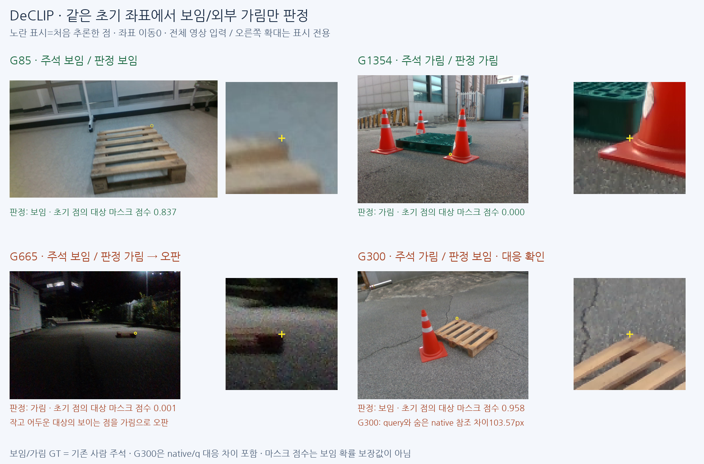
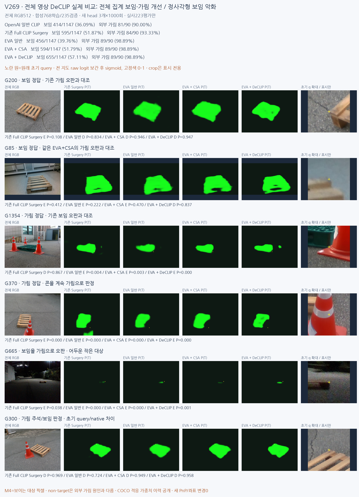

기존 Surgery 대비 DeCLIP의 보임 정답 변화 +60/1147, 외부 가림 정답 변화 +5/90입니다. 같은 EVA+CSA 경로에서 백본 가중치 패키지를 바꾸고 동일 조건으로 head를 학습하면 보임 +61, 외부 가림 +0입니다. 실사 결과에 맞춘 추가 학습·문턱·체크포인트 선택은0이며 새 게이트를 배포하지 않았습니다.
실제 영상 전체 사례 · 84행 CM/P/R/보류 · 자기 가림21행 · 외부 가림90점 · 합성 RGB/M4 대조 · 학습·재현 안내
판정 사례는 보임/가림 정답·오판을 표시합니다. G300은 주석 native와 query 대응 차이가 큰 사례로 별도 표시했습니다.


| 방법 | D→D/E/U | E→D/E/U | D P/R% | E P/R% | 보류% |
|---|---|---|---|---|---|
| OpenAI 일반 CLIP | 414/733/0 | 9/81/0 | 97.87/36.09 | 9.95/90.00 | 0.00 |
| 기존 Full CLIP Surgery | 595/552/0 | 6/84/0 | 99.00/51.87 | 13.21/93.33 | 0.00 |
| EVA 일반 | 456/691/0 | 1/89/0 | 99.78/39.76 | 11.41/98.89 | 0.00 |
| EVA + CSA | 594/553/0 | 1/89/0 | 99.83/51.79 | 13.86/98.89 | 0.00 |
| EVA + DeCLIP | 655/492/0 | 1/89/0 | 99.85/57.11 | 15.32/98.89 | 0.00 |
| V264_HEATMAP_LOCAL | 1028/119/0 | 67/23/0 | 93.88/89.63 | 16.20/25.56 | 0.00 |
| CAL_LEGACY | 655/319/173 | 3/83/4 | 99.54/57.11 | 20.65/92.22 | 14.31 |
| 방법 | D→D/E/U | E→D/E/U | D P/R% | E P/R% | 보류% |
|---|---|---|---|---|---|
| OpenAI 일반 CLIP | 240/376/0 | 4/25/0 | 98.36/38.96 | 6.23/86.21 | 0.00 |
| 기존 Full CLIP Surgery | 307/309/0 | 2/27/0 | 99.35/49.84 | 8.04/93.10 | 0.00 |
| EVA 일반 | 307/309/0 | 1/28/0 | 99.68/49.84 | 8.31/96.55 | 0.00 |
| EVA + CSA | 376/240/0 | 1/28/0 | 99.73/61.04 | 10.45/96.55 | 0.00 |
| EVA + DeCLIP | 393/223/0 | 1/28/0 | 99.75/63.80 | 11.16/96.55 | 0.00 |
| V264_HEATMAP_LOCAL | 510/106/0 | 18/11/0 | 96.59/82.79 | 9.40/37.93 | 0.00 |
| CAL_LEGACY | 448/65/103 | 2/23/4 | 99.56/72.73 | 26.14/79.31 | 16.59 |
| 방법 | D→D/E/U | E→D/E/U | D P/R% | E P/R% | 보류% |
|---|---|---|---|---|---|
| OpenAI 일반 CLIP | 174/357/0 | 5/56/0 | 97.21/32.77 | 13.56/91.80 | 0.00 |
| 기존 Full CLIP Surgery | 288/243/0 | 4/57/0 | 98.63/54.24 | 19.00/93.44 | 0.00 |
| EVA 일반 | 149/382/0 | 0/61/0 | 100.00/28.06 | 13.77/100.00 | 0.00 |
| EVA + CSA | 218/313/0 | 0/61/0 | 100.00/41.05 | 16.31/100.00 | 0.00 |
| EVA + DeCLIP | 262/269/0 | 0/61/0 | 100.00/49.34 | 18.48/100.00 | 0.00 |
| V264_HEATMAP_LOCAL | 518/13/0 | 49/12/0 | 91.36/97.55 | 48.00/19.67 | 0.00 |
| CAL_LEGACY | 207/254/70 | 1/60/0 | 99.52/38.98 | 19.11/98.36 | 11.82 |
목재는 보임307→393/616, 가림27→28/29입니다. 정사각형은 보임288→262/531로 악화했고, 가림57→61/61로 좋아졌습니다. 전체 집계 개선이 두 재질 모두의 개선은 아닙니다.
OpenAI 일반 CLIP→EVA 일반은 백본 구조와 일반 사전학습 패키지가 함께 바뀝니다. EVA 일반→EVA+CSA는 원본 가중치 그대로 마지막 attention/readout(잔차·FFN 처리 포함)이 바뀝니다. EVA+CSA→DeCLIP은 구조·CSA 읽기·특징폭·분할 head·학습 배치를 맞추고 공개 dense 적응 가중치 패키지만 바뀝니다. 기존 Surgery는 OpenAI ViT-B/16의 공식 Surgery 영상 구조를 사용한 역사적 참조이며, 공식 text feature surgery/zero-shot 전체 파이프라인 재현은 아닙니다.
새 세 방식은 전체 RGB512→공식 projected512 특징32×32→L2 정규화→동일26721개 파라미터 head입니다. 같은 M4 target, seed17 초기값, 학습768/DEV235, 배치8·AdamW0.001/0.0001·고정1000회를 사용했습니다. 백본은 동결했고 KP crop/sliding 입력은 없습니다. 세 final을 DEV 전에 동결하고, 실사223장 전체 지도를 만든 후 초기 q를 읽었습니다.
공개 DeCLIP은 COCO 이미지와 DINOv2 교사를 통한 적응 이력이 있습니다. 이번 팔레트용 head 학습은 합성만 사용했습니다. 공식 코드 · 공식 논문 · 실제 source/weights commit·SHA
이번 과제는 원래 초기 좌표의 보임(D)/외부 가림(E) 판정입니다. 좌표를 옮기거나 키포인트를 새로 찾는 실험은 아닙니다. 앞서 사용한 ‘복구’는 잘못된 가림 판정이 보임 정답으로 바뀌었다는 뜻이며, 위치 보정 결과로 해석하면 안 됩니다.
G200과 G85는 사람 주석상 보임입니다. 기존 Surgery가 가림으로 오판했지만 DeCLIP은 보임으로 맞혔습니다. G200은 일반 EVA도 이미 보임이어서 DeCLIP만의 효과로 볼 수 없습니다. G85는 같은 EVA+CSA가 가림(.470), DeCLIP은 보임(.837)이므로 이번 dense 적응 가중치 패키지 차이를 보여주는 사례입니다. 점은 모두 같은 초기 좌표입니다.
G1354는 콘 경계에 가려진 점입니다. 기존 Surgery는 보임(.867), 세 EVA 방식은 모두 가림으로 맞혔습니다. G370의 콘 흰 띠도 모두 가림 정답을 유지합니다. 기존 Surgery가 받침 일부에 초록 반응을 보이던 영상에서 EVA는 그 반응을 줄입니다. 다만 외부 가림89/90은 일반 EVA부터 동일합니다. 콘 가림의 정답 증가를 DeCLIP만의 성과라고 부를 수 없습니다.
보이는 점을 가림으로 오판하는 문제는 남습니다. G665의 작은 야간 팔레트는 몸통 중앙에는 반응하지만 보이는 native 점은 가림으로 읽습니다. G2는 기존 Surgery·EVA+CSA가 보임 정답이었으나 DeCLIP은 가림(.468)으로 새로 오판한 예입니다. 실사 전체에서 기존 Surgery 대비 보임 오판162개가 정답으로 바뀌고, 반대로102개가 새 오판이 되어 순60점 개선입니다. 같은 EVA+CSA 대비139개가 정답으로 바뀌고78개가 새 오판입니다. 모든 사례에서 단조롭게 좋아진 것은 아닙니다.
DeCLIP의 가림→보임 오판은 G300 한 점입니다. 초기 q는 보이는 상판 근처인데, 가림 주석은 해당 native에 붙어 있습니다. 참조 좌표는 pnp_projected이며 초기 q와103.57px 떨어집니다. 이 점은 콘 표면을 팔레트로 잘못 분할한 사례와 구분해야 합니다. 현재 픽셀의 대상 여부만으로 특정 native의 가시성을 정하는 목표 차이를 보여줍니다. 숨은 참조좌표를 직접 보이는 정답 위치로 취급하지 않았고 평가 주석도 바꾸지 않았습니다.
최종적으로 보임655/1147, 가림89/90을 맞혔지만, 가림으로 내보낸581점 중 실제 외부 가림은89점(precision15.32%)입니다. 나머지492점은 보임을 가림으로 잘못 판정했습니다. 가림 recall98.89%를 전체 판정 정확도98.89%로 읽으면 안 됩니다. 입력 가능한 PRIMARY1237점 전체 정확도는60.15%입니다. 초기 오차≤3px인 수동 보임376점에서도164점을 가림으로 오판합니다.
합성 M4 원본 픽셀 IoU는 기존 Surgery65.29→DeCLIP72.04%지만 원본1/3px 경계F1은 개선되지 않았습니다. 고정 합성770에서는 팔레트 위 상자를 대상 영역으로 채우는 오류가 남습니다. 따라서 분할 영역 인식의 개선은 확인되지만, 보임/실제 외부 가림을 안정적으로 나누는 최종 판정기는 아직 완성되지 않았습니다.
| 방법 | 초기오차≤3px 수동 보임 정답 /376 |
|---|---|
| OpenAI 일반 CLIP | 130 |
| 기존 Full CLIP Surgery | 194 |
| EVA 일반 | 136 |
| EVA + CSA | 183 |
| EVA + DeCLIP | 212 |
| 방법 | 원본 M4 IoU% | 경계F1@1px% | 경계F1@3px% |
|---|---|---|---|
| OpenAI 일반 CLIP | 66.02 | 12.43 | 25.15 |
| 기존 Full CLIP Surgery | 65.29 | 12.52 | 24.99 |
| EVA 일반 | 64.46 | 10.65 | 21.47 |
| EVA + CSA | 51.07 | 7.33 | 14.60 |
| EVA + DeCLIP | 72.04 | 11.80 | 24.57 |
모든 raw32 logit를 원래 H/W로 bilinear 복원한 뒤 M4 uint8>127과 비교했습니다. 경계는 원본1/3px 고정 허용입니다. 합성 IoU와 실사 native 보임 recall은 다른 지표입니다. 실사 픽셀 GT가 없어 실사 IoU는 보고하지 않습니다.
M4는 보이는 대상 픽셀이고 여집합에는 배경·틈·다른 물체가 섞입니다. 초기 q의 대상 여부를 특정 native 코너의 보임/외부 가림에 대응한 proxy입니다. 자기 가림은 E에 합치지 않았습니다. PRIMARY1237=D1147/E90, 원래 입력불가45점(U)을 보존했습니다. CAL은 과거 실사 학습 이력이 있는 참조입니다. G996은 사용자와 기존 E 주석의 해석 이견을 보존했습니다.
실사223장은 학습·정규화 통계·문턱 선택에 넣지 않았지만 이미 반복 열람된 개발 평가입니다. 독립 블라인드 성능이나 목표90% 달성을 주장하지 않습니다. 새 PnP·위치 보정·추가 fit은 없습니다.
학습 전 조건 · 예측 동결 · 독립 검산 · CPU head·query 재현 · 재현 경로